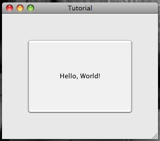
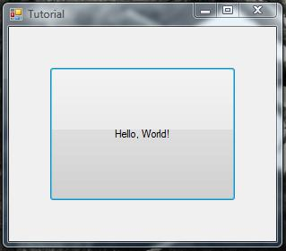
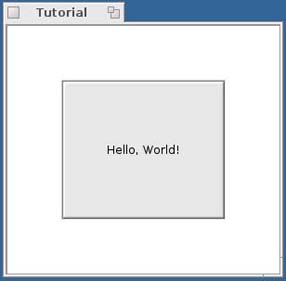

This tutorial uses the Auckland Layout Model (ALM) to create a simple layout demonstrating concepts used by the ALM, such as tabs, areas and constraints. A simple program will be described to demonstrate this and the source code will be provided to assist your learning.
Before you start: Please make sure you have downloaded the Auckland Layout Model libraries as well as the native lpsolve55 runtime library. The runtime library must be kept in a path accessible from the program being executed, for example /usr/local/lib in Unix or C:\Windows\system32\ in Windows (but just keeping it in the project path should work for most platforms.)
The tutorial will help you create a simple application. The application will have one button in the center of a window. The button will have a minimum size of 150x150 pixels, and will have a padding of uniform dimension on each side, no matter what the window size is.
All that we need to get started is a container and a single widget/control/component. For this program we will use a button.
The next step is to create a new ALMLayout object and assign it to act as the Layout Manager for the container.
| Java | C# | C++ (Haiku) |
|---|---|---|
ALMLayout alm = new ALMLayout(); setLayout(alm); |
private ALMLayout alm = new ALMLayout();
public override LayoutEngine LayoutEngine
{
get { return alm; }
}
|
BALMLayout* fALM = new BALMLayout(); SetLayout(fALM); |
| Description: An instance of ALMLayout is created and assigned as the layout manager using the Container classes setLayout method. | Description: An instance of ALMLayout is created and the getter for the container's LayoutEngine is overridden to return the ALMLayout. | Description: An instance of BALMLayout is created and set as the layout manager using the SetLayout method. |
This sets the ALMLayout as the window's layout manager. However no areas have yet been added to the layout, thus no widgets are assigned to the container. For the ALMLayout to display the widget, we must configure it
We now are ready to specify tabs, areas and constraints:
A simple layout somebody may wish to create with this example is simply to centre the button on the panel. This can be done quite simply, by defining a single area and assigning the button to it. The area can have its own alignment properties too, so these can be set to centre the button.
The following piece of Java code will define this :
Area a = alm.addArea(alm.getLeft(), alm.getTop(), alm.getRight(), alm.getBottom(), button); a.setHorizontalAlignment(HorizontalAlignment.CENTER); a.setVerticalAlignment(VerticalAlignment.CENTER);
That's not much of a demonstration of ALM, however. Let's define some linear algebra. Instead of the previous code, try this:
XTab x1 = alm.addXTab(); XTab x2 = alm.addXTab(); YTab y1 = alm.addYTab(); YTab y2 = alm.addYTab(); Area a = alm.addArea(x1, y1, x2, y2, button); // constrain the button to at least 150x150 a.setMinimumContentSize(new Dimension(150, 150)); // Constrain the padding to be the same size on all edges alm.addConstraint(1, x1, -1, alm.getLeft(), -1, alm.getRight(), 1, x2, OperatorType.EQ, 0); alm.addConstraint(1, x1, -1, alm.getLeft(), -1, y1, 1, alm.getTop(), OperatorType.EQ, 0); alm.addConstraint(1, x1, -1, alm.getLeft(), -1, alm.getBottom(), 1, y2, OperatorType.EQ, 0);
This code may need a bit of explaining: Firstly, two horizontal tabs and two vertical tabs are added to the layout specification. Then an area is defined with the new tabs as the button's borders. The next line of code defines the minimum size of the button. This is equivalent as adding two constraints to the model:
x2 - x1 > 150and
y2 - y1 > 150or
alm.addConstraint(1, x2, -1, x1, OperatorType.GE, 150); alm.addConstraint(1, y2, -1, y1, OperatorType.GE, 150);
x1 - left = right - x2which becomes
x1 - left - right + x2 = 0which is equivalent to
1 * x1 + -1 * left + -1 * right + 1 * x2 = 0The formula states that the distance from the left of the screen to the left of the button is the same as the distance from the right of the button to the right of the screen. The next constraints specify that the top padding and bottom padding are the same as the left padding.
You can resize the window all you like to see the ALMLayout in action. Notice that the padding is the same on all edges and the button is larger 150x150 px? This is because you have defined a linear programming problem and the ALMLayout has found a solution. Take care when designing your own layouts, as careless combinations of constraints can easily make the layout problem impossible to solve.
Hopefully this short tutorial will be enough to get started using ALM and construct your own layouts. Good luck!
Below is a screenshot of how the tutorial application could look on each platform and the source code for each.
| Java [source] | C# [source] | C++ (Haiku) [source] |
|---|---|---|
|  |  |  |